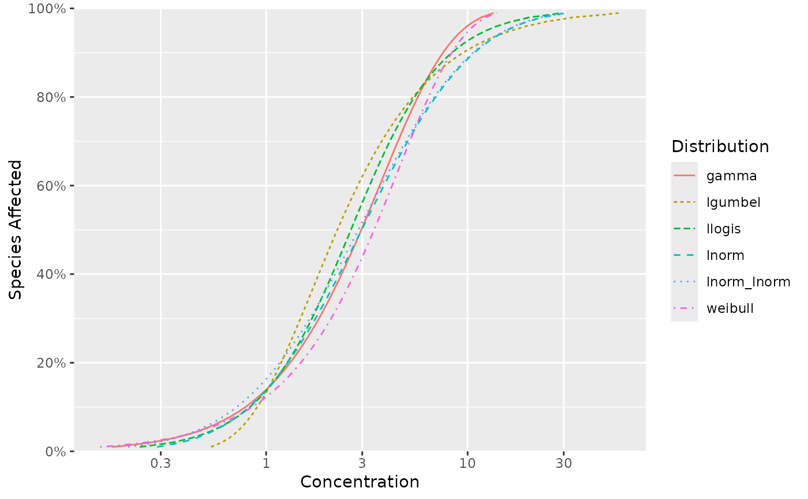

Gets a named list of the values that produce the moment values (meanlog and sdlog) by distribution and term.
Usage
ssd_match_moments(
dists = ssd_dists_bcanz(),
meanlog = 1,
sdlog = 1,
nsim = 1e+05
)Examples
moments <- ssd_match_moments()
print(moments)
#> $gamma
#> shape scale
#> 1.479687 2.589063
#>
#> $lgumbel
#> locationlog scalelog
#> 0.534375 0.762500
#>
#> $llogis
#> locationlog scalelog
#> 0.96875 0.52500
#>
#> $lnorm
#> meanlog sdlog
#> 0.9812500 0.9515625
#>
#> $lnorm_lnorm
#> meanlog1 sdlog1 meanlog2 sdlog2 pmix
#> 0.1409856 1.0659456 1.1849856 0.9799296 0.1487680
#>
#> $weibull
#> shape scale
#> 1.352319 4.502075
#>
ssd_hc(moments)
#> # A tibble: 6 × 9
#> dist proportion est se lcl ucl wt nboot pboot
#> <chr> <dbl> <dbl> <dbl> <dbl> <dbl> <dbl> <int> <dbl>
#> 1 gamma 0.05 0.439 NA NA NA 1 0 NA
#> 2 lgumbel 0.05 0.739 NA NA NA 1 0 NA
#> 3 llogis 0.05 0.562 NA NA NA 1 0 NA
#> 4 lnorm 0.05 0.558 NA NA NA 1 0 NA
#> 5 lnorm_lnorm 0.05 0.469 NA NA NA 1 0 NA
#> 6 weibull 0.05 0.501 NA NA NA 1 0 NA
ssd_plot_cdf(moments)
